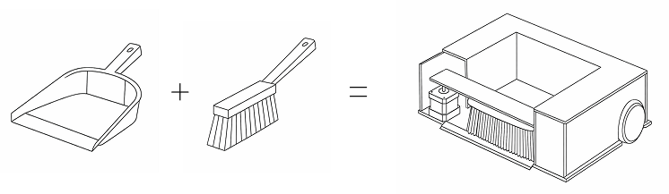
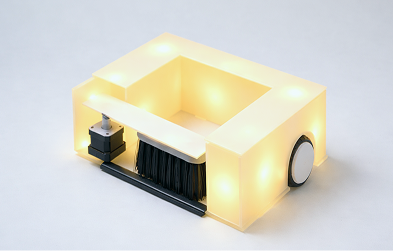
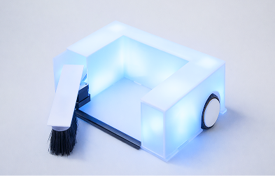
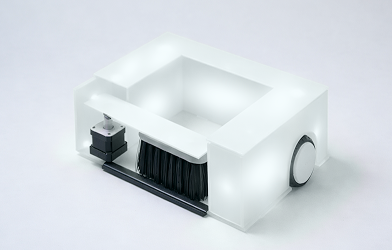

Kehrich
Overview
Im Rahmen des Moduls Mechatronik an der Hochschule für Gestaltung haben wir den Roboter Kehrich innerhalb von 2,5 Tagen von der Idee bis zum technischen Prototypen entwickelt. Das Ziel dieses Projekts war es, ein Gerät zu entwerfen, das eine einfache Aufgabe im Alltag übernehmen kann. Die Funktionsweise des Roboters sollte möglichst nah die menschliche Interaktion immitieren.

Konzept
Die Idee war, dass wir einen Roboter für die schwäbische Kehrwoche bauen. Dafür wollten wir Kehrwisch und Schaufel zu einem Gerät zusammenfügen und dem Roboter durch sein Verhaltensmuster einen lustigen Charakter geben. Als Inspiration dienten verschiedene Roboter aus Science-Fiction Filmen wie Baymax oder Eve aus “Wall-E”.

Prototypen


Finales Produkt
Vorwärts

zufällig zwischen 2,0 und 3,5 Sekunden
zufällig gerade, nach rechts oder links
Wischen

zufällig zwischen 2 und 6 Mal
zufällig zwischen 70 und 100 Grad
Rückwärts

zufällig zwischen 1,0 und 1,5 Sekunden
zufällig gerade, nach rechts oder links
Produktfotos